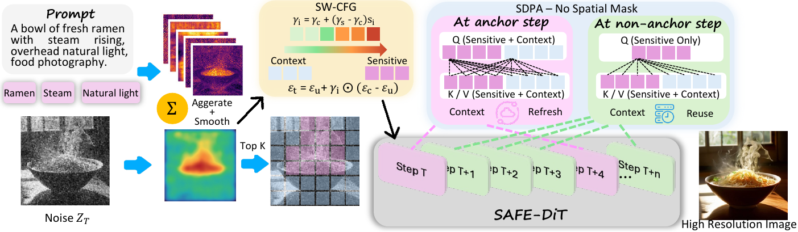
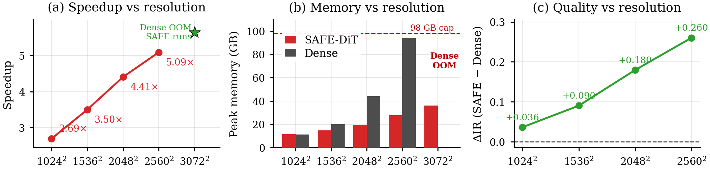
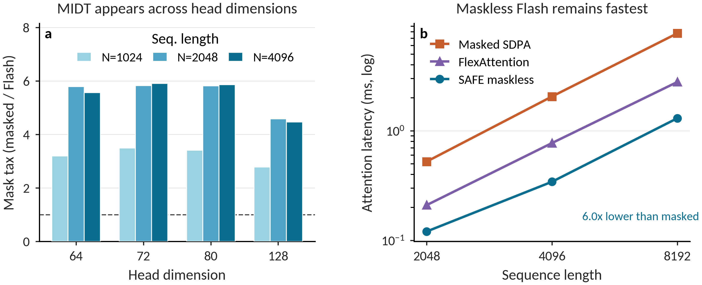
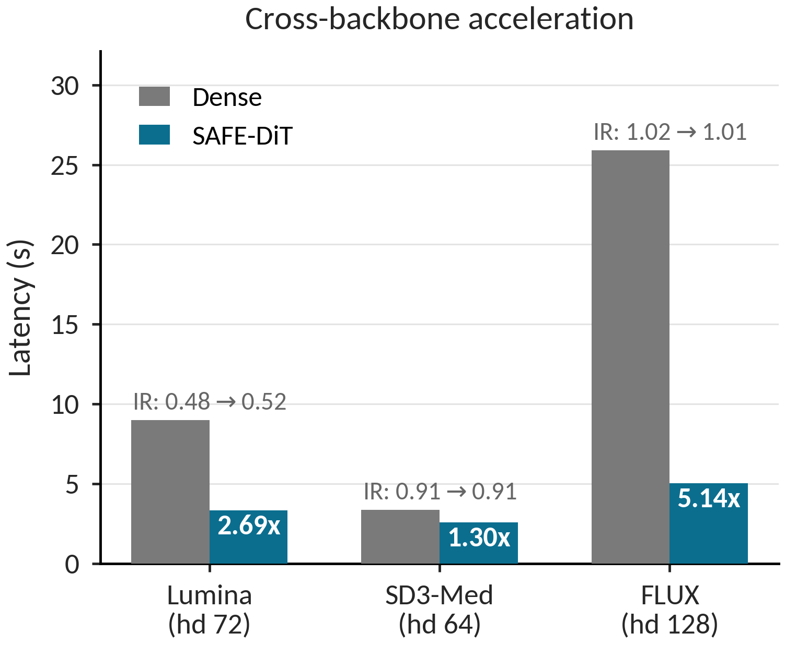
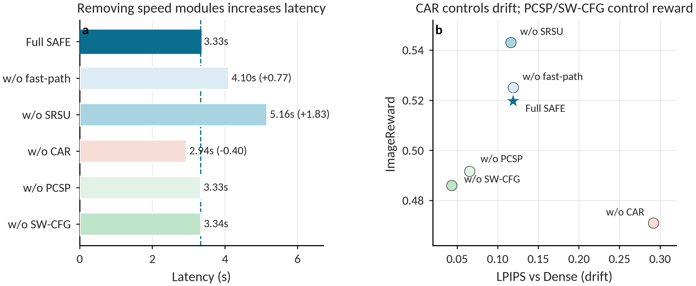
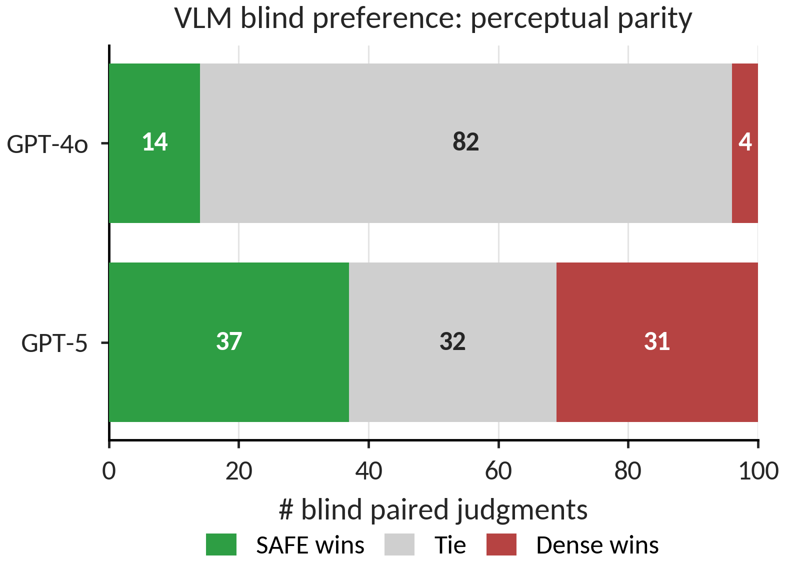
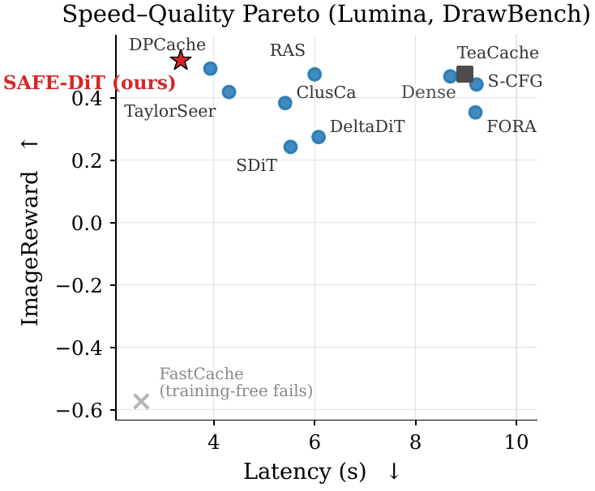
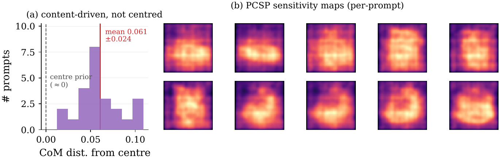
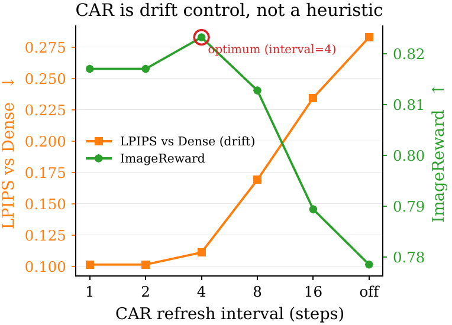
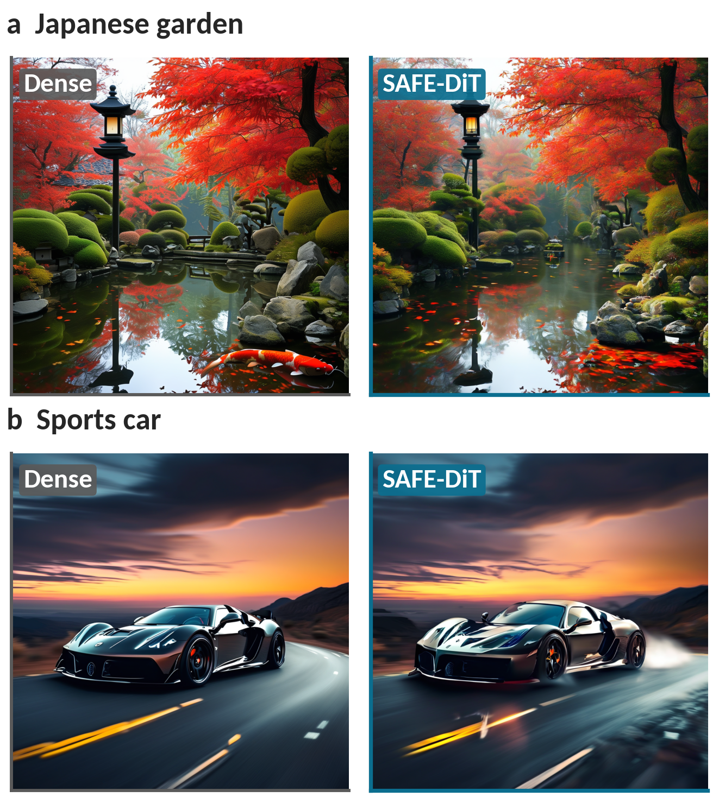

High-resolution diffusion transformer inference
SAFE-DiT
Semantics-Aware Fast-path Execution for High-Resolution Diffusion Transformers
School of Computer Science, The University of Sydney
Training-free
Exact mask elision
Mask-free scheduling
Human non-inferiority study
Overview
Separate the exact systems rewrite from approximate spatial scheduling.
SAFE-DiT targets a systems bottleneck in high-resolution Diffusion Transformers: spatially adaptive code often represents routing decisions as attention masks, even when those masks are mathematically redundant. Such masks can change PyTorch SDPA dispatch and erase the intended speedup.
The method removes only provenance-certified image self-attention masks that induce a row-wise constant shift in attention logits. Semantics-bearing masks, including text padding masks, are retained. Spatial adaptation is then expressed through prompt-conditioned token partitioning, selective state updates, context anchor refresh, and spatial guidance.

Method
Four pieces, one clear claim boundary.
Certified Mask Elision
SAFE-SDPA removes a mask only when every query row adds a finite constant to all key logits. All-valid image self-attention masks qualify; padding, causal, block, and non-uniform bias masks do not.
Prompt-Conditioned Sensitivity
Early image-to-text attention responses identify prompt-sensitive regions. The partition is fixed after warm-up, avoiding repeated routing overhead.
Selective State Update
SRSU computes sensitive query rows while retaining global keys and values. Context rows are cached and periodically refreshed by CAR to limit drift.
Spatial Guidance
SW-CFG reuses the sensitivity field to adjust prediction-level guidance. It changes prompt alignment behavior without reintroducing spatial self-attention masks.
Results
Acceleration grows with resolution and follows the mask boundary.


Setting
Latency
Memory
Outcome
10242 Lumina-Next
2.69x
11.3 to 11.7 GB
Matched prompt and seed quality
25602 Lumina-Next
5.09x
94.1 to 27.9 GB
Dense+FP plus scheduling gain
30722 Stress
OOM to runs
36.2 GB
Dense inference runs out of memory
Evidence
Quality is checked with paired metrics, ablations, VLM checks, and a blinded human study.
SAFE-Core isolates acceleration fidelity from guidance changes. A blinded human study finds no prompt-level loss against Dense+FP on visual quality and satisfies the 5 percent non-inferiority criterion. SAFE-DiT+SW is reported separately as a prompt-alignment operating point.



Appendix Visuals
Additional diagnostics from the supplement.




Qualitative Comparisons
Matched prompt and seed examples.

Run
Clone the repository and run the public generation adapter.
git clone https://github.com/xuanhuayin/SAFE-DiT.git
cd SAFE-DiT
python -m venv .venv
. .venv/bin/activate
pip install -r requirements.txtpython -m safe_dit.generate_pixart \
--mode safe \
--prompt "a glass greenhouse on a snowy mountain" \
--output outputs/pixart_safe.png \
--height 1024 --width 1024 --steps 20Citation
If SAFE-DiT helps your work, please cite it.
@article{yin2026safedit,
title={SAFE-DiT: Semantics-Aware Fast-path Execution for High-Resolution Diffusion Transformers},
author={Yin, Xuanhua and Jia, Yuxuan and Xu, Chuanzhi and Cai, Weidong},
journal={arXiv preprint arXiv:2606.29360},
year={2026},
doi={10.48550/arXiv.2606.29360},
url={https://arxiv.org/abs/2606.29360}
}